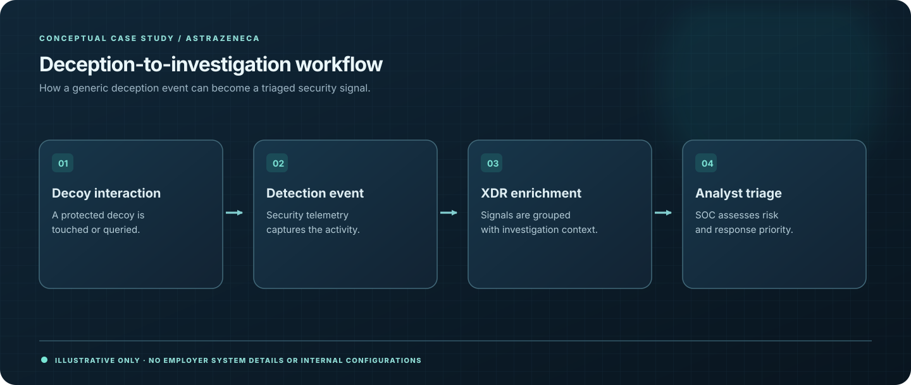

03 / FEATURED CASE STUDY · 2025
Endpoint Deception & Detection
Using deception signals to improve visibility into suspicious endpoint behavior.

01 / CONTEXT
The challenge
Traditional alert streams produce noise. High-signal deception events can help analysts identify suspicious behaviors, provided the resulting signals are actionable.
02 / EXECUTION
My approach
- Implemented Microsoft Defender deception capabilities in an enterprise endpoint security initiative.
- Configured generic decoy-account and lure concepts and related detection signals to XDR incident analysis.
- Used deception alerts as additional context for security investigation and operational triage.
03 / EVIDENCE
Outcomes & contribution
- Contributed to an enterprise-scale Microsoft Defender deception rollout.
- Integrated deception signal review with XDR investigations.
- Demonstrated how deceptive lures can complement existing detection and analyst response.
04 / TAKEAWAY
What I learned
Detection engineering is as much about alert quality, context, and operational use as it is about deploying a technical capability.
Sharing & confidentiality
Public-safe summary only. No internal configurations, decoy details, deployment counts, operational indicators, or proprietary materials are shared.